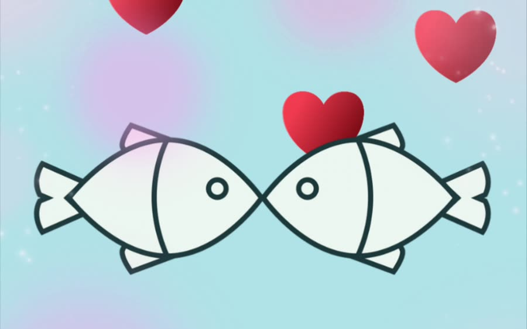
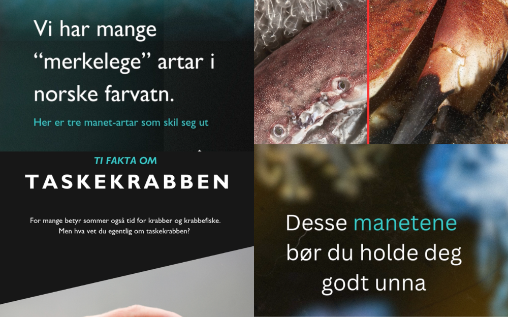
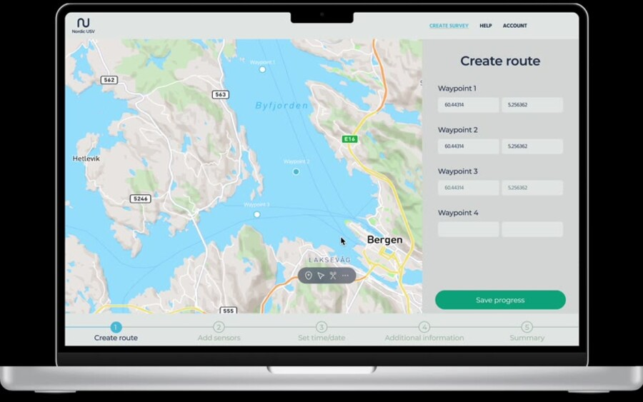
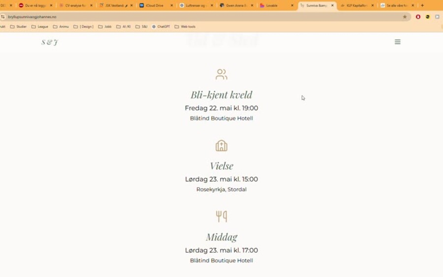

Kampanjer og innhold med målbar effekt

Valentinskampanje for Matarena
Idé, design & innholdsproduksjon · Instagram Reel
En konkurranse som skulle skape engasjement og glede rundt Bergen Matfestival.
1 585 visninger · 57 kommentarer · 48 likes

«Rare fakta om reker» & «Kule fakta om krabber»
Grafisk design · Plakatserie for festival
Lærerikt og lekent festivalinnhold rettet mot barn — og foreldrene deres.
«Noe av det sterkeste grafiske materialet vi har hatt» – festivalleder

Sosialt innhold for Havforskningsinstituttet
Innholdsproduksjon · Instagram Stories
Gjøre forskningsformidling visuelt og tilgjengelig for et bredt publikum.
Tilbakemelding på «veldig fint innhold»

Nordic USV — bestillingsplattform for havdata
Eneste designer · UX/UI, designprofil & web
Plattform der forskere bestiller datainnsamling med ubemannede fartøy.
Bygget fra bunnen i tidligfase startup
Savr — verktøy for pris og næring
Eget produkt · UX/UI & konsept
AI-drevet verktøy som regner ut både kostnad og næringsinnhold for en oppskrift.
Lim inn oppskrift → pris & næring automatisk

Bryllupsnettside for Sunniva & Johannes
Design & utvikling · Klientarbeid
Bryllupsside med adaptivt RSVP og dynamisk oversikt for brudeparet.
Brukt aktivt av gjestene · topp 40 besøk i bryllupshelgen